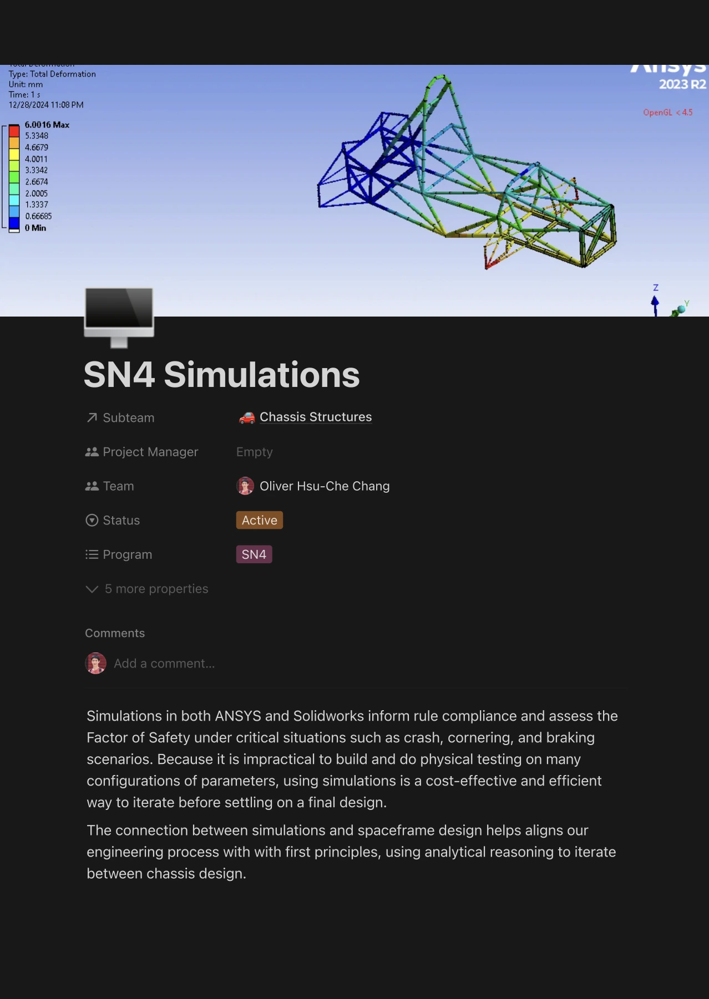
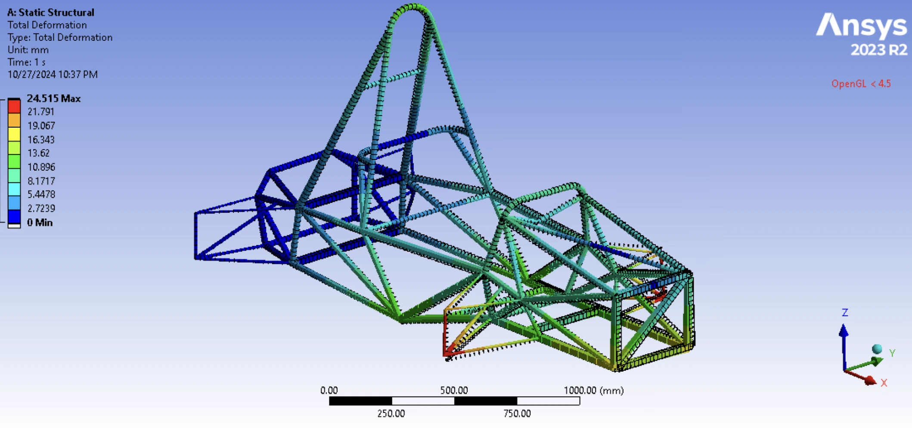
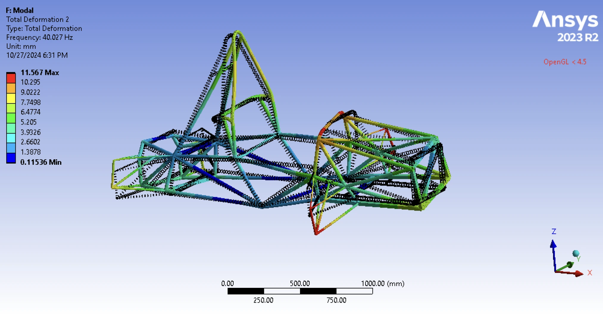
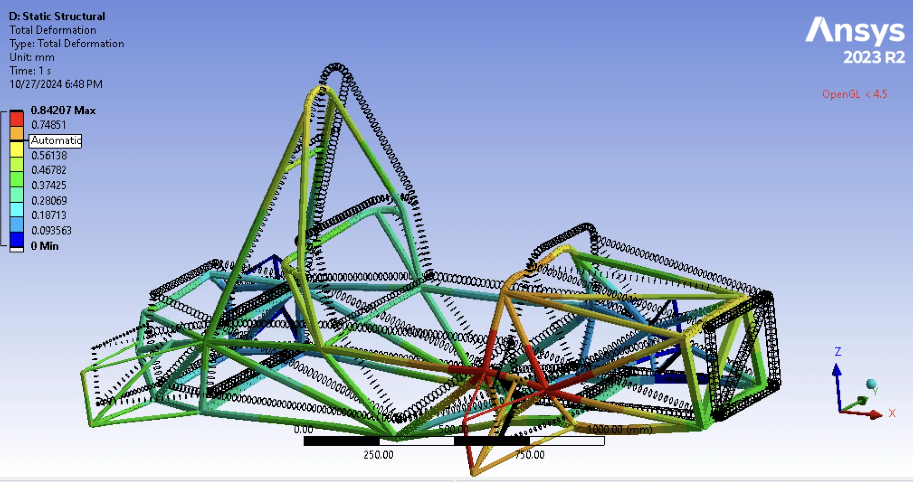
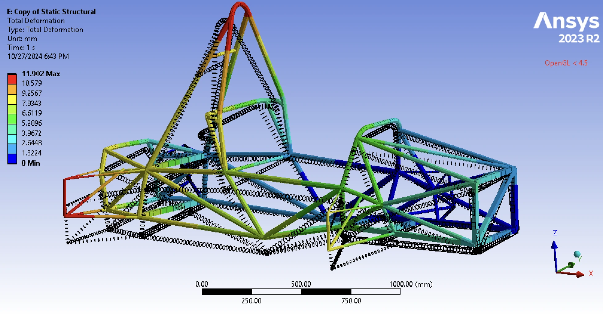
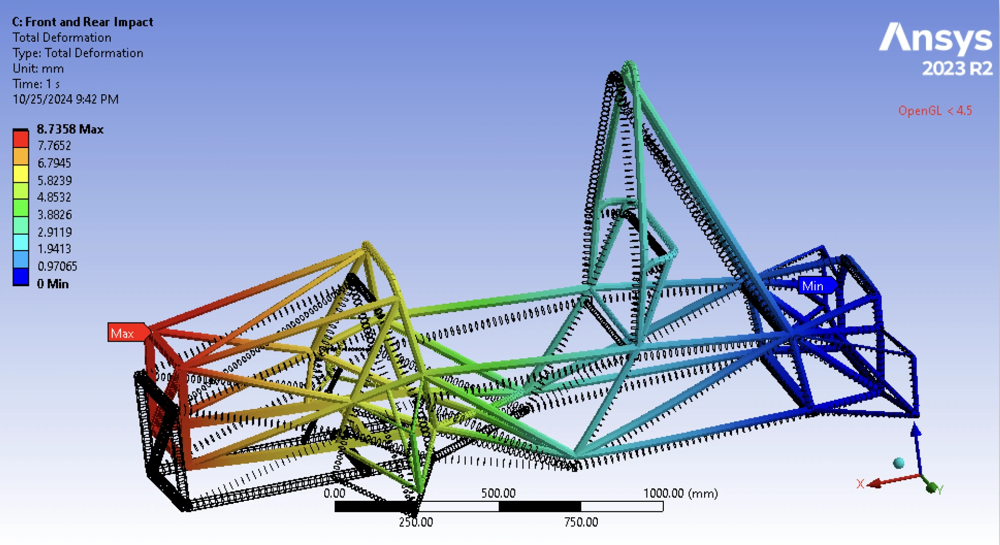
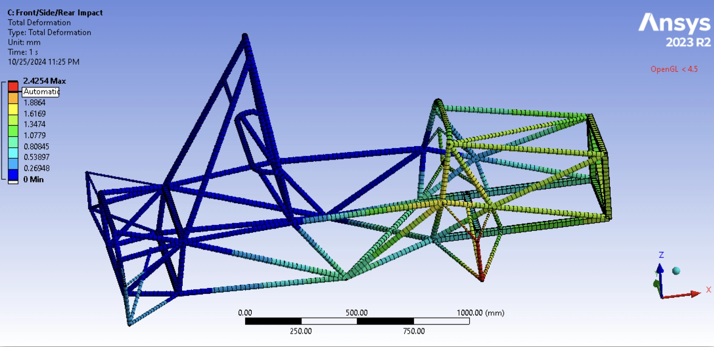
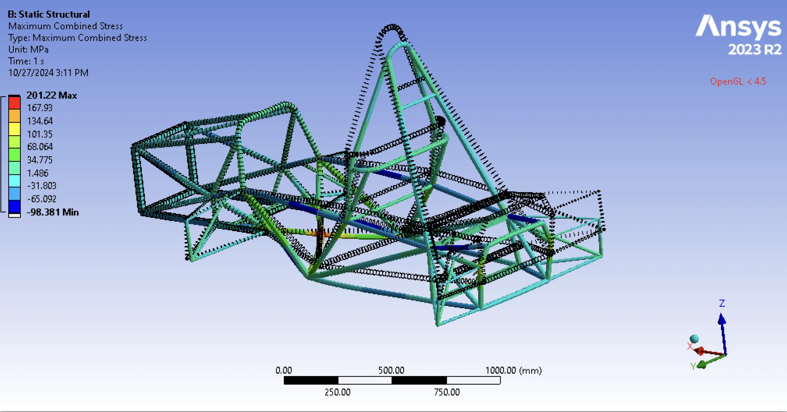

Torsional Stiffness
Measures the chassis's resistance to twisting under applied torque.
I used ANSYcS simulation tools to optimize spaceframe strength and weight through structural analysis and impact testing using ANSYS Workbench, Spaceclaim, and Mechanical. This data helps to inform rule compliance and assessed the Factor of Safety under crash, cornering, and braking scenarios.
I am currently working to validate simulation data through designing a torsional stiffness testing jig and plan to enhance handling performance.
ROLE
Mechanical Engineer
TOOLS



Simulations in both ANSYS and Solidworks inform rule compliance and assess the Factor of Safety under critical situations such as crash, cornering, and braking scenarios. Because it is impractical to build and do physical testing on many configurations of parameters, using simulations is a cost-effective and efficient way to iterate before settling on a final design.
The connection between simulations and spaceframe design helps aligns our engineering process with with first principles, using analytical reasoning to iterate between chassis design.
This is our team’s first year using ANSYS to do structural simulations on the car. Current progress has been done to solve for various conditions but there is a lot of opportunity in how to use this data and towards optimizing for performance.
Design Objections

Measures the chassis's resistance to twisting under applied torque.
Identifies the natural frequencies and vibration modes of the chassis.


Assesses chassis stiffness effects on handling during steady-state turning.
Evaluates handling and load distribution when cornering over uneven surfaces.


Tests the chassis's structural integrity during a frontal collision.
Analyzes the chassis's ability to withstand forces from a lateral collision.


Tests the chassis's structural integrity during a rear collision.
Currently in the simulation process, we’re able to quantify these metrics of FOS and torsional stiffness, but there’s a gap in understanding what the goal and target values should be for each. Future research into how to set these goals and better understanding the relationship with dynamics performance is important for using this new data to qualify the extent of the car’s performance and it’s potential/theoretical peak.
Because simulations was started mid-development cycle, there’s opportunity for future car designs to utilize simulations more across the entire design cycle. Having more iterations and “what if” can be weighed through simulation, helping validate hand-calcs and helping make more analytical decisions.